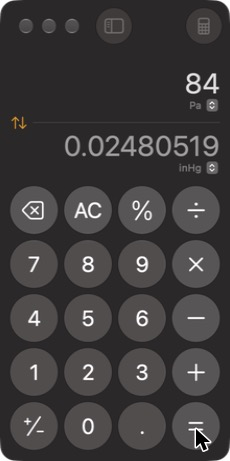

What Claude sees when it uses your Mac
Learning how to add computer use to my own LLM harness
I noticed that many people, me included, use AI agents without understanding how modern harnesses handle magic capabilities such as computer use or orchestrating subagents. Most people who work with AI know the basic ReAct loop behind an agent: the model calls a tool, reads the result and decides on the next call. Fewer know how modern harnesses build stuff on top of that loop. To investigate computer use, I logged one session in the Claude desktop app and analyzed it for you. By the end of the article, you will know how computer use works and how Claude's scaffolding works.
First, let's set the stage: here are the components we will see. The Claude desktop app runs Claude Code (the claude CLI) as a separate process, and Claude Code sends the requests to the Anthropic API. Inside the desktop app runs an MCP server called computer-use. It sits between the model and macOS: it takes screenshots and presses buttons using macOS's old accessibility features.
When the model decides to use the computer, it calls the MCP server for a screenshot of an app. The tool result contains the image and a enumerated clickable element list: the buttons and fields that the macOS accessibility API reports for that window. To click, the model calls another tool from the same MCP server with either a number from the list or a pixel coordinate, and the tool result is one line of text that names the element that was pressed.

[0] AXButton [2,108 34×31] "Swap Units" [2] AXButton [188,99 33×13] "Input Unit" [4] AXButton [177,162 43×13] "Result Unit" [5] AXButton [10,186 48×48] "Delete" [6] AXButton [64,186 48×48] "All Clear" [7] AXButton [118,186 48×48] "Per cent" [8] AXButton [172,186 48×48] "Divide" [9] AXButton [10,240 48×48] "7" [10] AXButton [64,240 48×48] "8" [11] AXButton [118,240 48×48] "9" [12] AXButton [172,240 48×48] "Multiply" [13] AXButton [10,294 48×48] "4" [14] AXButton [64,294 48×48] "5" [15] AXButton [118,294 48×48] "6" [16] AXButton [172,294 48×48] "Subtract" …(31 elements total)
app_click(app: "com.apple.calculator", coordinate: [88, 318])
ok (AXPress on AXButton '5' via AXWindow>AXGroup>AXSplitGroup>AXGroup×2)
Claude could have passed element_index: 14 instead of a coordinate; the server would have used the same centre point. In both cases, for a standard control like this one, the server does not send a mouse event (it can in other cases, which we won't look at here). The MCP server looks up the accessibility element at the point and asks macOS to perform its press action, so the tool result can name the button. That's it for the TL;DR.
The rest of the post has two parts. Part 1 covers the scaffolding, meaning how the model sees the whole interaction, one API request at a time, and the batching of actions that let the model run eight actions in one tool call. Part 2 covers how Claude Code, the API, the desktop app and the MCP server interact.
1. The transcript of API calls
The model has no separate computer-use mode. Each step is one request to the Messages API, and the request contains the system prompt (the system field), the tool definitions and the whole conversation so far in a list called messages. That's it. Claude replies with tool calls, Claude Code runs them, and the results are added to messages as the next user message. The session took nine calls. For each call, the viewer below shows the request as the JSON object that was sent. Read the highlighted comments from top to bottom and click through the LLM turns.
In the first request, Claude doesn't have the computer-use tools yet. It knows only their names, from the system message that describes the MCP servers. So in its first reply, Claude calls a special tool, ToolSearch, which loads the definitions of the computer-use server's tools into the next request. In the same reply, it loads the computer-use skill, a text guide on how to use those tools. After that, Claude calls the server's tools themselves: it asks for access to Calculator, opens it, takes a screenshot and clicks.
Batching actions
app_batch is one of the most important parts of computer use: it runs a list of actions inside one tool call, so the model doesn't have to generate the clicks one at a time, one turn each (a single LLM turn takes seconds). In call 5, Claude sent eight actions, seven clicks and a screenshot, as one app_batch. In a second run of the same prompt, the server returned all eight results and the new screenshot together 685 ms after Claude Code sent the call, less time than a person needs to click seven buttons.
Sent one at a time, the same actions would have needed eight model calls, and a model call in this session took between 2.5 and 14 s, so the batch saved roughly half a minute. Batching works because the screenshot and the element list let Claude plan all the clicks in advance; it checked the outcome once, in the screenshot at the end of the batch.
2. Where it runs
On the Mac, a click goes through two processes and one library that can call native macOS APIs, which the Claude app's JavaScript code can't call directly. Also notice that the app is a wrapper around the Claude Code CLI and doesn't talk to the LLM itself.
The desktop app starts a Claude Code process for each session and talks to it over that process's stdin and stdout, one JSON object per line. Claude Code holds the conversation and the connection to the API. The computer-use MCP server is not a separate program: it runs inside the desktop app's own Electron main process, unlike most MCP servers you configure yourself, and it calls a Swift library, computer_use.node, that the app loads directly. When Claude's reply contains app_click, Claude Code writes the MCP request to its stdout inside a control message, and the app passes the same JSON-RPC object to the server in a function call.
Permissions are checked in several places. The app pre-approves the computer-use tools for Claude Code, so there is no per-call prompt; the server checks its own per-app grants and limits each app by type: browsers can only be viewed, and terminals can be clicked but not typed into. Each API request also asks for a server-side safety check (the safeguards field), and the response carries a verdict for the tool calls in it; in this session every tool call got one except ToolSearch.
This design is very cool because it means we can run Claude on one computer and the computer-use MCP server on another, or use our own server, as cmux does (a great agentic coding terminal I love).
Appendix: how this was captured
The installed app can't be inspected directly. Its Electron build disables RunAsNode, NODE_OPTIONS and --inspect, and its code archive is integrity-checked. I made a copy of the app and added logging hooks to its JavaScript: on the Claude Code pipe, on the in-process MCP traffic, and on every call into the Swift library. I also pointed the copy's Claude Code at a local proxy that logs API traffic, then re-signed the copy ad hoc. Electron 44 checks the archive twice, against a hash in Info.plist and against a digest of that whole entry stored inside the Electron framework binary, so both had to be updated. The copy ran with its own profile, cloned from the login data of my normal one, and was launched from a terminal so that it inherited that terminal's Screen Recording and Accessibility permissions.
The viewer shows the logged requests with my personal setup removed: my own MCP servers, skills and instructions, my list of installed apps and identifying paths. Everything that ships with Claude is left as it was, including the full computer-use instructions and tool definitions. Token counts are as measured, so they include the removed material.
The scripts and the captured data are in the GitHub repository: patching and re-signing the copy, the logging proxy and building the viewer data.
Logged on November 1, 2026. The viewer's data is the real request log of one session, about 400 KB of JSON.